소리 설계 VLM 기준선 — qwen35_9b_nf4, 프롬프트 v3, 평가셋 30장, 정답지 v2
| 지표 | 현재 | 12/03 목표 | |
|---|
| 필수 소리원 찾은 비율 | 75% (56/75) | 70% 이상 | 달성 |
| 지어낸 소리 비율 (소리 안 나는 물체 + 그림에 없음) | 12% (15/120) | 15% 이하 | 달성 |
| 위치 오차 대각선 10% 이내 | 90% (55/61) | (전부) | 달성 |
| JSON 성공 | 30/30 | 100% | 달성 |
| 그림 1장 평균 시간 (VLM 단계만) | 34.1초 | 전 과정 10분 이내 | 달성 |
정답지 밖 소리: 들릴 만함 34, 소리 안 나는 물체 10, 그림에 없음 5. 비교: 이전 단어 겹침 채점이면 필수 77%, 짝 없음 32%.
짝짓기: Gemini(gemini-4-neon)가 그림을 보며 뜻으로 판정. 그림: 파랑 원 = 정답지(C번호, 큰 원 = 필수), 주황 네모 = 모델(Q번호).
01_hunters — 눈 속의 사냥꾼 42.2초
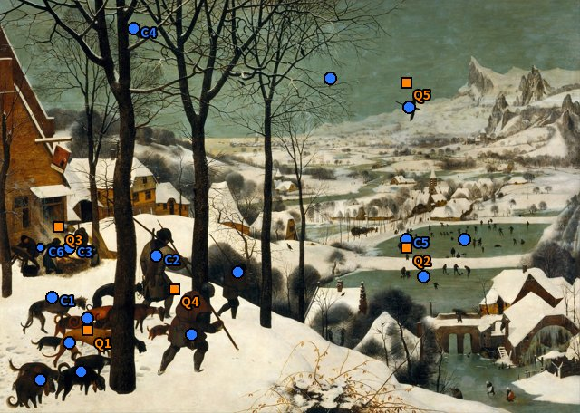
정답지 (초록 = 찾음, 빨강 = 놓침)
- C1 [필수/clustered] 사냥개 발소리와 헐떡임
- C2 [필수/clustered] 사냥꾼의 눈 밟는 발소리
- C3 [필수/point] 모닥불 타는 소리
- C4 [필수/clustered] 까마귀 울음
- C5 [필수/clustered] 스케이트 날과 아이들 웃음
- C6 [허용/point] 모닥불 곁 사람들 소리
- C7 [허용/ambient] 겨울바람
모델 출력 (초록 = 짝 있음, 파랑 = 정답지에 없지만 들릴 만함, 빨강 = 지어냄)
- Q1 강아지 싸움 dogs fighting in the snow → 정답지에 없지만 들릴 만함
- Q2 스케이트 people skating on frozen river → C5
- Q3 불 fire burning near the house → C3
- Q4 사냥꾼 hunters walking with dogs → C2
- Q5 새 birds flying in the sky → 정답지에 없지만 들릴 만함
위치 오차
- 스케이트 날과 아이들 웃음 ↔ 스케이트: 대각선의 1.2%
- 모닥불 타는 소리 ↔ 불: 대각선의 3.3%
- 사냥꾼의 눈 밟는 발소리 ↔ 사냥꾼: 대각선의 5.2%
02_rainy_day — 파리의 거리, 비 오는 날 49.0초
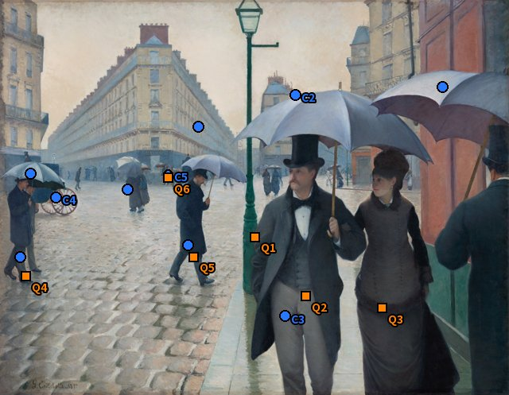
정답지 (초록 = 찾음, 빨강 = 놓침)
- C1 [필수/ambient] 빗소리
- C2 [필수/clustered] 우산에 떨어지는 빗방울
- C3 [필수/clustered] 젖은 돌길 발소리
- C4 [필수/point] 마차 바퀴와 말발굽
- C5 [허용/point] 멀리 지나가는 말
- C6 [허용/ambient] 먼 도시의 웅성임
모델 출력 (초록 = 짝 있음, 파랑 = 정답지에 없지만 들릴 만함, 빨강 = 지어냄)
- Q1 비 내리는 거리 rain falling on cobblestone street → C1
- Q2 걸음걸이 man in top hat walking on sidewalk → 정답지에 없지만 들릴 만함
- Q3 걸음걸이 woman in dark dress walking beside man → 정답지에 없지만 들릴 만함
- Q4 걸음걸이 man with umbrella on left side walking → C3
- Q5 걸음걸이 man in center walking toward right → 정답지에 없지만 들릴 만함
- Q6 마차 소리 horse-drawn carriage in background → C4
위치 오차
- 젖은 돌길 발소리 ↔ 걸음걸이: 대각선의 3.2%
- 마차 바퀴와 말발굽 ↔ 마차 소리: 대각선의 17.6%
03_wave — 가나가와 앞바다의 거대한 파도 41.6초
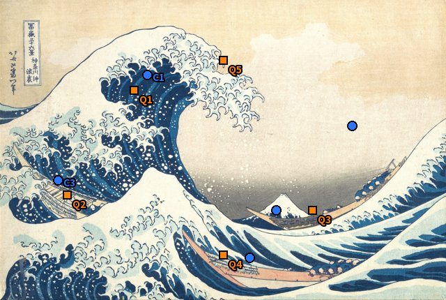
정답지 (초록 = 찾음, 빨강 = 놓침)
- C1 [필수/point] 거대한 파도 부서지는 소리
- C2 [필수/ambient] 거친 바다
- C3 [필수/clustered] 배 삐걱임과 뱃사람 외침
- C4 [허용/ambient] 바닷바람
모델 출력 (초록 = 짝 있음, 파랑 = 정답지에 없지만 들릴 만함, 빨강 = 지어냄)
- Q1 파도 소리 crashing sea wave → C1
- Q2 배 소리 fishing boat → C3
- Q3 배 소리 fishing boat → 정답지에 없지만 들릴 만함
- Q4 배 소리 fishing boat → 정답지에 없지만 들릴 만함
- Q5 바람 소리 wind over sea → C4
위치 오차
- 거대한 파도 부서지는 소리 ↔ 파도 소리: 대각선의 3.7%
- 배 삐걱임과 뱃사람 외침 ↔ 배 소리: 대각선의 3.2%
04_beach — 트루빌 해변 58.8초
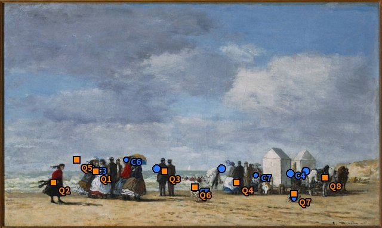
정답지 (초록 = 찾음, 빨강 = 놓침)
- C1 [필수/ambient] 파도 소리
- C2 [필수/ambient] 바닷바람
- C3 [필수/clustered] 해변 사람들의 대화
- C4 [필수/clustered] 말 울음과 말발굽
- C5 [허용/clustered] 개 짖는 소리
- C6 [허용/point] 우산 펄럭임
- C7 [허용/point] 탈의차 바퀴
모델 출력 (초록 = 짝 있음, 파랑 = 정답지에 없지만 들릴 만함, 빨강 = 지어냄)
- Q1 사람들 대화 group of people standing and talking → C3
- Q2 걸음걸이 woman walking on the beach → 정답지에 없지만 들릴 만함
- Q3 사람들 서기 men standing on the beach → 지어냄: 소리 안 나는 물체
- Q4 사람들 앉기 people sitting on the beach → 지어냄: 소리 안 나는 물체
- Q5 물결 소리 sea waves → C1
- Q6 개 달리기 dog running on the beach → 정답지에 없지만 들릴 만함
- Q7 개 누우기 dog lying on the beach → 지어냄: 소리 안 나는 물체
- Q8 말 서기 horses standing → C4
위치 오차
- 해변 사람들의 대화 ↔ 사람들 대화: 대각선의 1.0%
- 말 울음과 말발굽 ↔ 말 서기: 대각선의 4.6%
05_boulevard — 몽마르트르 대로 34.3초
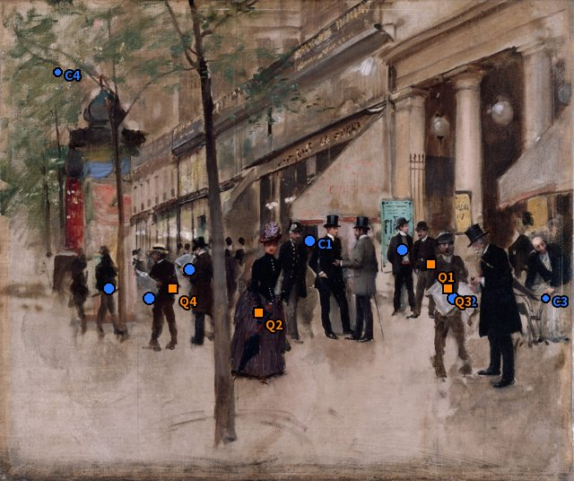
정답지 (초록 = 찾음, 빨강 = 놓침)
- C1 [필수/clustered] 거리 사람들의 대화와 발소리
- C2 [필수/point] 신문팔이 외침
- C3 [허용/point] 자전거 소리
- C4 [허용/point] 가로수 잎 바람
모델 출력 (초록 = 짝 있음, 파랑 = 정답지에 없지만 들릴 만함, 빨강 = 지어냄)
- Q1 사람들 대화 group of men standing and conversing on the sidewalk → 정답지에 없지만 들릴 만함
- Q2 걸음걸이 woman in long skirt walking down the street → 정답지에 없지만 들릴 만함
- Q3 신문 읽기 man holding and reading a newspaper → 정답지에 없지만 들릴 만함
- Q4 길거리 소음 crowd of people moving along the sidewalk → C1
위치 오차
- 거리 사람들의 대화와 발소리 ↔ 길거리 소음: 대각선의 3.3%
06_ssireum — 씨름 41.9초
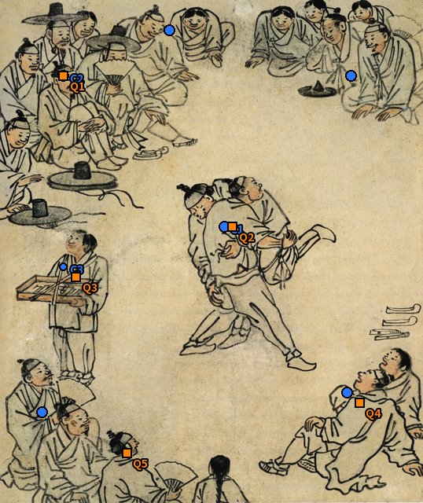
정답지 (초록 = 찾음, 빨강 = 놓침)
- C1 [필수/point] 씨름꾼 몸싸움과 기합
- C2 [필수/clustered] 구경꾼 환호와 웃음
- C3 [허용/point] 엿장수 외침
모델 출력 (초록 = 짝 있음, 파랑 = 정답지에 없지만 들릴 만함, 빨강 = 지어냄)
- Q1 남자들 웃음소리 group of seated men talking and laughing → C2
- Q2 남자들 싸움 소리 two men wrestling in the center → C1
- Q3 남자 발걸음 소리 man carrying a tray on his head → 정답지에 없지만 들릴 만함
- Q4 남자들 넘어짐 소리 two men falling to the ground → 정답지에 없지만 들릴 만함
- Q5 남자들 숨소리 group of men sitting and watching the scene → 정답지에 없지만 들릴 만함
위치 오차
- 구경꾼 환호와 웃음 ↔ 남자들 웃음소리: 대각선의 0.0%
- 씨름꾼 몸싸움과 기합 ↔ 남자들 싸움 소리: 대각선의 1.3%
07_seodang — 서당 31.3초
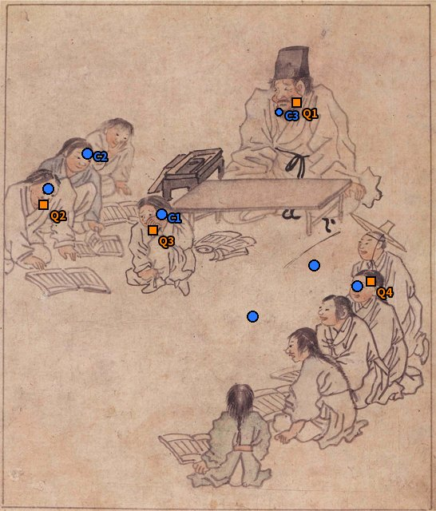
정답지 (초록 = 찾음, 빨강 = 놓침)
- C1 [필수/point] 훈장에게 혼난 아이의 훌쩍임
- C2 [필수/clustered] 아이들의 킥킥 웃음
- C3 [허용/point] 훈장의 말소리
모델 출력 (초록 = 짝 있음, 파랑 = 정답지에 없지만 들릴 만함, 빨강 = 지어냄)
- Q1 말하기 teacher's mouth → C3
- Q2 읽기 student's mouth → 정답지에 없지만 들릴 만함
- Q3 하품 yawning student's mouth → 정답지에 없지만 들릴 만함
- Q4 웃음 smiling student's mouth → C2
위치 오차
- 훈장의 말소리 ↔ 말하기: 대각선의 3.0%
- 아이들의 킥킥 웃음 ↔ 웃음: 대각선의 2.1%
08_mudong — 무동 46.3초
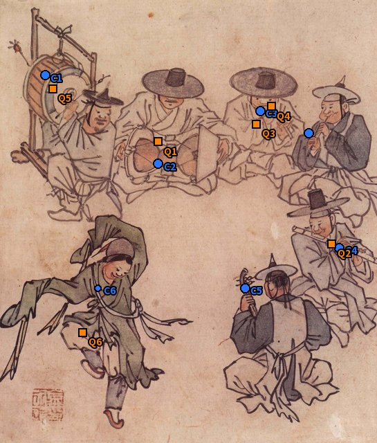
정답지 (초록 = 찾음, 빨강 = 놓침)
- C1 [필수/point] 북 소리
- C2 [필수/point] 장구 소리
- C3 [필수/clustered] 피리 소리
- C4 [필수/point] 대금 소리
- C5 [필수/point] 해금 소리
- C6 [허용/point] 춤추는 아이의 소매 휘날림과 발 구름
모델 출력 (초록 = 짝 있음, 파랑 = 정답지에 없지만 들릴 만함, 빨강 = 지어냄)
- Q1 북치기 barrel drum being struck → C1
- Q2 대금연주 transverse flute being played → C4
- Q3 장구치기 hourglass drum being played → C2
- Q4 피리연주 small double-reed pipe being played → C3
- Q5 북치기 large barrel drum being struck → 정답지에 없지만 들릴 만함
- Q6 춤추는 발소리 dancer moving feet → C6
위치 오차
- 북 소리 ↔ 북치기: 대각선의 22.6%
- 대금 소리 ↔ 대금연주: 대각선의 1.5%
- 장구 소리 ↔ 장구치기: 대각선의 18.2%
- 피리 소리 ↔ 피리연주: 대각선의 2.1%
- 춤추는 아이의 소매 휘날림과 발 구름 ↔ 춤추는 발소리: 대각선의 8.0%
09_danopungjeong — 단오풍정 39.7초
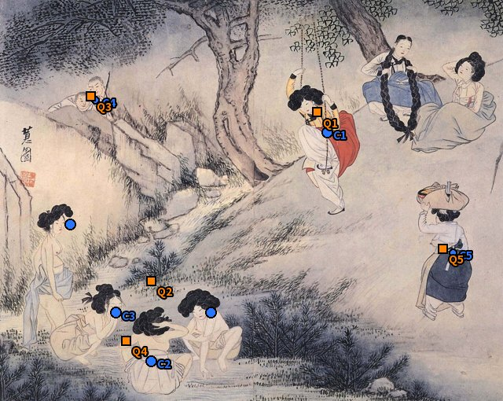
정답지 (초록 = 찾음, 빨강 = 놓침)
- C1 [필수/point] 그네 삐걱임
- C2 [필수/point] 개울물 소리
- C3 [필수/clustered] 여인들의 웃음과 물장구
- C4 [허용/point] 몰래 엿보는 아이들의 킥킥거림
- C5 [허용/point] 보따리 이고 가는 발소리
- C6 [허용/ambient] 나뭇잎 바람
모델 출력 (초록 = 짝 있음, 파랑 = 정답지에 없지만 들릴 만함, 빨강 = 지어냄)
- Q1 진자 놀이 girl on swing → C1
- Q2 물소리 stream → C2
- Q3 등반 소리 two boys climbing rocks → 정답지에 없지만 들릴 만함
- Q4 목욕 소리 women bathing in stream → C3
- Q5 걸음걸이 woman walking with basket → C5
위치 오차
- 그네 삐걱임 ↔ 진자 놀이: 대각선의 3.5%
- 개울물 소리 ↔ 물소리: 대각선의 12.5%
- 여인들의 웃음과 물장구 ↔ 목욕 소리: 대각선의 4.6%
- 보따리 이고 가는 발소리 ↔ 걸음걸이: 대각선의 1.7%
10_inwang — 인왕제색도 26.0초
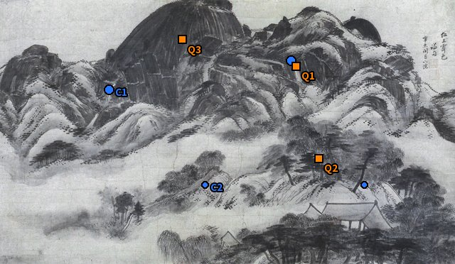
정답지 (초록 = 찾음, 빨강 = 놓침)
- C1 [필수/clustered] 비 갠 뒤 폭포 소리
- C2 [허용/clustered] 소나무 숲 바람
- C3 [허용/ambient] 비 갠 산의 물방울과 안개
모델 출력 (초록 = 짝 있음, 파랑 = 정답지에 없지만 들릴 만함, 빨강 = 지어냄)
- Q1 폭포소리 waterfall → C1
- Q2 바람소리 pine trees → C2
- Q3 눈소리 snow-covered mountains → 지어냄: 그림에 없음
위치 오차
- 비 갠 뒤 폭포 소리 ↔ 폭포소리: 대각선의 1.3%
- 소나무 숲 바람 ↔ 바람소리: 대각선의 10.0%
11_shower — 오하시 아타케의 소나기 28.4초
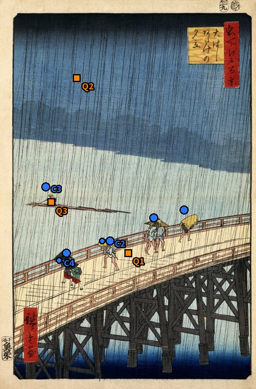
정답지 (초록 = 찾음, 빨강 = 놓침)
- C1 [필수/ambient] 소나기 빗소리
- C2 [필수/clustered] 다리 위를 뛰는 발소리
- C3 [필수/point] 뗏목 사공의 장대와 물소리
- C4 [허용/clustered] 삿갓과 우산에 떨어지는 빗방울
- C5 [허용/ambient] 강물 흐르는 소리
모델 출력 (초록 = 짝 있음, 파랑 = 정답지에 없지만 들릴 만함, 빨강 = 지어냄)
- Q1 비 내리는 다리 people walking on bridge with umbrellas → C2
- Q2 쏟아지는 비 falling rain over the scene → C1
- Q3 보에 있는 남자 man paddling a flat raft → C3
위치 오차
- 다리 위를 뛰는 발소리 ↔ 비 내리는 다리: 대각선의 4.6%
- 뗏목 사공의 장대와 물소리 ↔ 보에 있는 남자: 대각선의 3.5%
12_kambara — 가바라 밤의 눈 25.1초
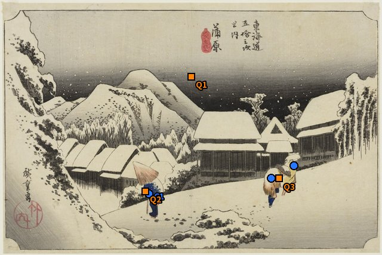
정답지 (초록 = 찾음, 빨강 = 놓침)
- C1 [필수/clustered] 눈 밟는 발소리
- C2 [허용/ambient] 고요한 눈 내리는 밤
모델 출력 (초록 = 짝 있음, 파랑 = 정답지에 없지만 들릴 만함, 빨강 = 지어냄)
- Q1 눈 내리기 falling snow → C2
- Q2 발소리 person walking in snow → C1
- Q3 발소리 person walking in snow → 정답지에 없지만 들릴 만함
위치 오차
- 눈 밟는 발소리 ↔ 발소리: 대각선의 1.0%
13_qingming — 청명상하도 (무지개다리 부분) 42.4초
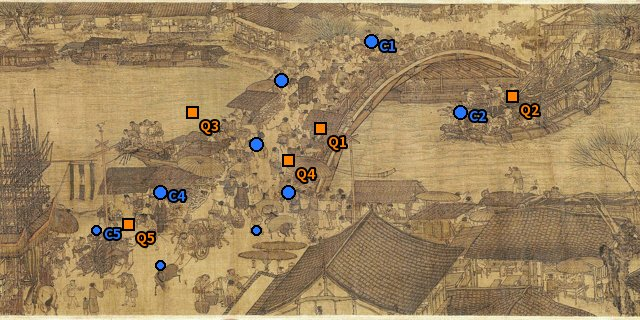
정답지 (초록 = 찾음, 빨강 = 놓침)
- C1 [필수/clustered] 다리 위 군중의 웅성임
- C2 [필수/point] 다리 밑 배의 사공들 외침
- C3 [필수/ambient] 강물 소리
- C4 [필수/clustered] 시장 상인들의 호객
- C5 [허용/clustered] 수레와 짐승 소리
모델 출력 (초록 = 짝 있음, 파랑 = 정답지에 없지만 들릴 만함, 빨강 = 지어냄)
- Q1 사람들의 발소리 crowd of people walking on the bridge and street → 정답지에 없지만 들릴 만함
- Q2 배의 물소리 boats moving on the river → C2
- Q3 흐르는 물소리 flowing river water → C3
- Q4 산산한 우산 소리 people holding umbrellas → 지어냄: 소리 안 나는 물체
- Q5 수레 바퀴 소리 wheelbarrow being pulled → C5
위치 오차
- 다리 밑 배의 사공들 외침 ↔ 배의 물소리: 대각선의 7.5%
- 수레와 짐승 소리 ↔ 수레 바퀴 소리: 대각선의 4.6%
14_tage — 답가도 (부분) 27.3초
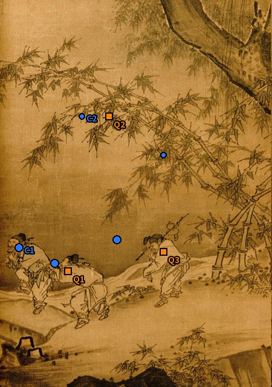
정답지 (초록 = 찾음, 빨강 = 놓침)
- C1 [필수/clustered] 농부들의 노래·웃음과 발 구르기
- C2 [허용/clustered] 대나무 잎 바람
모델 출력 (초록 = 짝 있음, 파랑 = 정답지에 없지만 들릴 만함, 빨강 = 지어냄)
- Q1 등산하는 사람들 three men climbing bamboo stalks → C1
- Q2 바람에 흔들리는 대나무 bamboo branches swaying in wind → C2
- Q3 피아노를 부는 사람 man playing transverse flute → 지어냄: 그림에 없음
위치 오차
- 농부들의 노래·웃음과 발 구르기 ↔ 등산하는 사람들: 대각선의 3.3%
- 대나무 잎 바람 ↔ 바람에 흔들리는 대나무: 대각선의 5.8%
15_galette — 물랭 드 라 갈레트의 무도회 28.8초
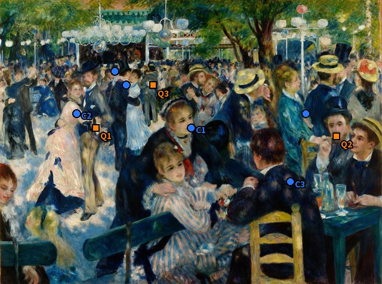
정답지 (초록 = 찾음, 빨강 = 놓침)
- C1 [필수/clustered] 사람들의 대화와 웃음
- C2 [필수/clustered] 춤추는 발소리
- C3 [필수/point] 잔 부딪히는 소리
- C4 [허용/ambient] 야외 무도회 음악
- C5 [허용/ambient] 나뭇잎 바람
모델 출력 (초록 = 짝 있음, 파랑 = 정답지에 없지만 들릴 만함, 빨강 = 지어냄)
- Q1 춤추는 사람들 couples dancing in the foreground and midground → C2
- Q2 담배 피우는 남자 man in top hat smoking a cigar on the right → 정답지에 없지만 들릴 만함
- Q3 사람들의 속삭임 dense crowd of people standing and mingling in the background → C1
위치 오차
- 춤추는 발소리 ↔ 춤추는 사람들: 대각선의 5.0%
- 사람들의 대화와 웃음 ↔ 사람들의 속삭임: 대각선의 8.6%
16_horsefair — 말 시장 32.1초
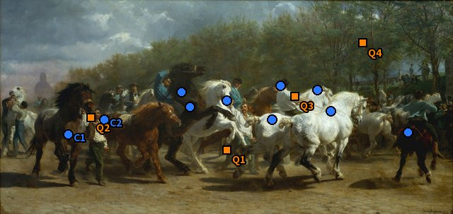
정답지 (초록 = 찾음, 빨강 = 놓침)
- C1 [필수/clustered] 말발굽과 말 울음
- C2 [필수/clustered] 마부들의 고함
- C3 [허용/ambient] 장터 사람들 웅성임
모델 출력 (초록 = 짝 있음, 파랑 = 정답지에 없지만 들릴 만함, 빨강 = 지어냄)
- Q1 말 발소리 galloping horses' hooves on dirt → C1
- Q2 남자 소리 men shouting and gesturing → C2
- Q3 휘파람 man on horseback whistling → 정답지에 없지만 들릴 만함
- Q4 바람 소리 trees swaying in wind → 정답지에 없지만 들릴 만함
위치 오차
- 말발굽과 말 울음 ↔ 말 발소리: 대각선의 10.8%
- 마부들의 고함 ↔ 남자 소리: 대각선의 2.7%
17_rainsteam — 비, 증기, 속도 24.3초
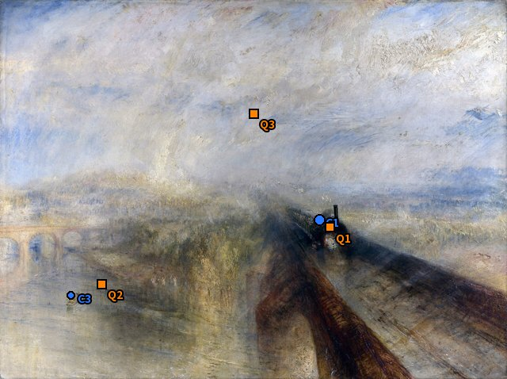
정답지 (초록 = 찾음, 빨강 = 놓침)
- C1 [필수/point] 증기기관차 소리와 기적
- C2 [필수/ambient] 비바람
- C3 [허용/point] 강 위 작은 배
모델 출력 (초록 = 짝 있음, 파랑 = 정답지에 없지만 들릴 만함, 빨강 = 지어냄)
- Q1 기차 소리 steam locomotive → C1
- Q2 물소리 river → 정답지에 없지만 들릴 만함
- Q3 비소리 rain → C2
위치 오차
- 증기기관차 소리와 기적 ↔ 기차 소리: 대각선의 2.0%
18_milkmaid — 우유 따르는 여인 (함정: 조용한 실내) 12.0초
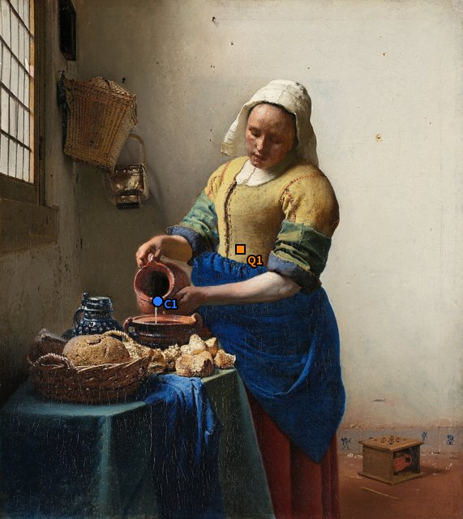
정답지 (초록 = 찾음, 빨강 = 놓침)
모델 출력 (초록 = 짝 있음, 파랑 = 정답지에 없지만 들릴 만함, 빨강 = 지어냄)
- Q1 우유 부는 소리 woman pouring milk from jug → C1
위치 오차
- 우유 따르는 소리 ↔ 우유 부는 소리: 대각선의 14.1%
19_peasantwedding — 농민의 결혼식 44.8초
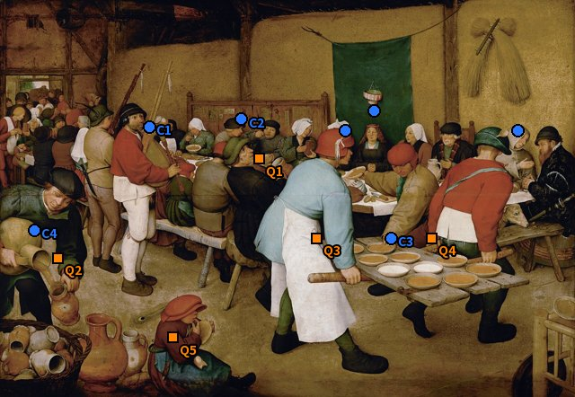
정답지 (초록 = 찾음, 빨강 = 놓침)
- C1 [필수/point] 백파이프 연주
- C2 [필수/clustered] 잔치 사람들의 대화와 웃음
- C3 [필수/clustered] 그릇과 숟가락 소리
- C4 [필수/point] 술 따르는 소리
모델 출력 (초록 = 짝 있음, 파랑 = 정답지에 없지만 들릴 만함, 빨강 = 지어냄)
- Q1 사람들 대화 group of people eating and talking at long tables → C2
- Q2 포도주 부어 man pouring wine from a jug into a cup → C4
- Q3 반죽 두드림 man beating dough on a wooden board with a rolling pin → 지어냄: 그림에 없음
- Q4 파이 나열 man arranging pies on a tray → C3
- Q5 아이 먹음 child sitting on floor eating bread → 정답지에 없지만 들릴 만함
위치 오차
- 잔치 사람들의 대화와 웃음 ↔ 사람들 대화: 대각선의 6.2%
- 술 따르는 소리 ↔ 포도주 부어: 대각선의 5.2%
- 그릇과 숟가락 소리 ↔ 파이 나열: 대각선의 5.8%
20_pearl — 진주 귀고리를 한 소녀 (함정: 초상) 3.8초
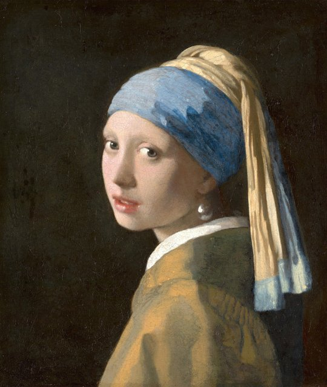
정답지 (초록 = 찾음, 빨강 = 놓침)
모델 출력 (초록 = 짝 있음, 파랑 = 정답지에 없지만 들릴 만함, 빨강 = 지어냄)
위치 오차
21_snapwhip — 채찍 놀이 25.9초
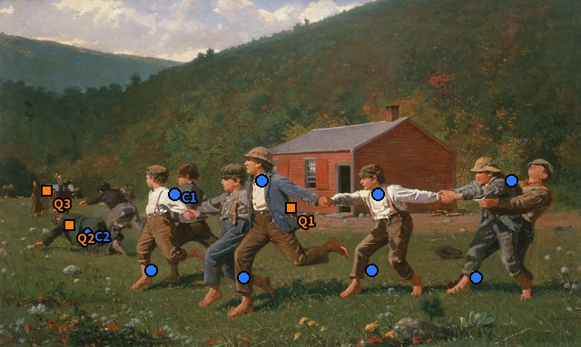
정답지 (초록 = 찾음, 빨강 = 놓침)
- C1 [필수/clustered] 아이들 함성과 달리는 발소리
- C2 [허용/point] 넘어진 아이들
- C3 [허용/ambient] 산골 바람과 새소리
모델 출력 (초록 = 짝 있음, 파랑 = 정답지에 없지만 들릴 만함, 빨강 = 지어냄)
- Q1 달리는 소년들 group of barefoot boys running hand-in-hand → C1
- Q2 넘어가는 소년 boy falling on the grass → C2
- Q3 놀고 있는 소년들 boys playing in the background → 정답지에 없지만 들릴 만함
위치 오차
- 아이들 함성과 달리는 발소리 ↔ 달리는 소년들: 대각선의 5.9%
- 넘어진 아이들 ↔ 넘어가는 소년: 대각선의 2.8%
22_liverpool — 달빛 속 리버풀 부두 47.9초
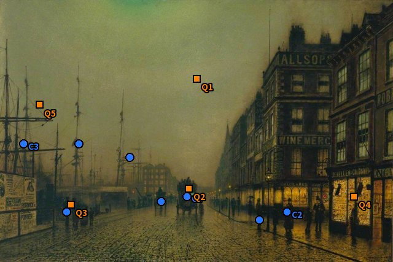
정답지 (초록 = 찾음, 빨강 = 놓침)
- C1 [필수/point] 마차 바퀴와 말발굽
- C2 [필수/clustered] 젖은 보도의 발소리
- C3 [필수/clustered] 항구의 배 삐걱임과 밧줄
- C4 [허용/ambient] 밤거리 비 내린 뒤 물소리
모델 출력 (초록 = 짝 있음, 파랑 = 정답지에 없지만 들릴 만함, 빨강 = 지어냄)
- Q1 안개 thick fog over the street and harbor → 지어냄: 소리 안 나는 물체
- Q2 마차 소리 horse-drawn carriage moving down the street → C1
- Q3 걸음걸이 people walking on the wet street → C2
- Q4 가게 조명 illuminated shop windows reflecting streetlights → 지어냄: 소리 안 나는 물체
- Q5 배의 돛대 ship masts in the harbor → 지어냄: 소리 안 나는 물체
위치 오차
- 마차 바퀴와 말발굽 ↔ 마차 소리: 대각선의 1.7%
- 젖은 보도의 발소리 ↔ 걸음걸이: 대각선의 1.9%
23_tuileries — 튈르리 공원의 음악회 35.6초
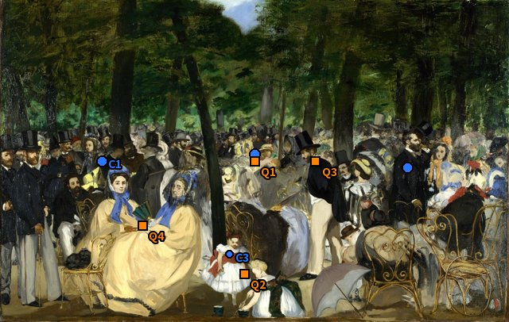
정답지 (초록 = 찾음, 빨강 = 놓침)
- C1 [필수/clustered] 공원의 사람들 대화
- C2 [필수/ambient] 야외 음악회
- C3 [허용/clustered] 아이들 노는 소리
- C4 [허용/ambient] 나뭇잎 바람
모델 출력 (초록 = 짝 있음, 파랑 = 정답지에 없지만 들릴 만함, 빨강 = 지어냄)
- Q1 사람들 대화 group of people in the park → C1
- Q2 아이들 놀음 two small children in the foreground → C3
- Q3 남자 서다 man in top hat standing near center → 정답지에 없지만 들릴 만함
- Q4 여자 앉아 two women seated in yellow dresses → 지어냄: 소리 안 나는 물체
위치 오차
- 공원의 사람들 대화 ↔ 사람들 대화: 대각선의 1.1%
- 아이들 노는 소리 ↔ 아이들 놀음: 대각선의 3.0%
24_avercamp — 스케이트 타는 사람들이 있는 겨울 풍경 (부분) 41.5초
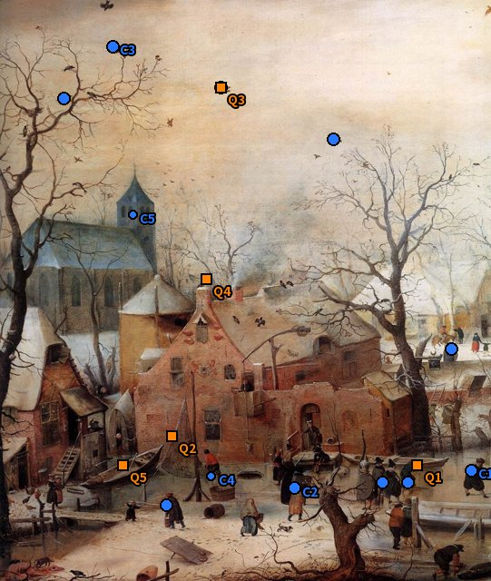
정답지 (초록 = 찾음, 빨강 = 놓침)
- C1 [필수/clustered] 스케이트와 얼음 소리
- C2 [필수/clustered] 마을 사람들 소리
- C3 [필수/clustered] 새소리
- C4 [허용/point] 얼음 구멍에서 물 긷는 소리
- C5 [허용/point] 교회 종소리
모델 출력 (초록 = 짝 있음, 파랑 = 정답지에 없지만 들릴 만함, 빨강 = 지어냄)
- Q1 얼음 스케이트 people skating on frozen canal → C1
- Q2 새 잡는 그물 men casting nets to catch birds → 지어냄: 그림에 없음
- Q3 날아다니는 새 birds flying in sky → C3
- Q4 연기 smoke rising from chimney → 지어냄: 소리 안 나는 물체
- Q5 배 wooden boat pulled onto shore → 지어냄: 소리 안 나는 물체
위치 오차
- 스케이트와 얼음 소리 ↔ 얼음 스케이트: 대각선의 2.6%
- 새소리 ↔ 날아다니는 새: 대각선의 0.0%
25_bargehaulers — 볼가강의 배 끄는 인부들 26.0초
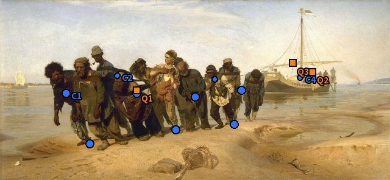
정답지 (초록 = 찾음, 빨강 = 놓침)
- C1 [필수/clustered] 인부들의 신음과 무거운 발소리
- C2 [허용/clustered] 밧줄 당기는 삐걱임
- C3 [필수/ambient] 강물과 바람
- C4 [허용/point] 범선 삐걱임
모델 출력 (초록 = 짝 있음, 파랑 = 정답지에 없지만 들릴 만함, 빨강 = 지어냄)
- Q1 어부들의 고역 group of fishermen dragging a net → C1
- Q2 바다 파도 calm sea surface → C3
- Q3 배의 물소리 sailboat hull in water → C4
위치 오차
- 인부들의 신음과 무거운 발소리 ↔ 어부들의 고역: 대각선의 0.8%
- 범선 삐걱임 ↔ 배의 물소리: 대각선의 3.8%
26_ironmill — 철 압연 공장 46.2초
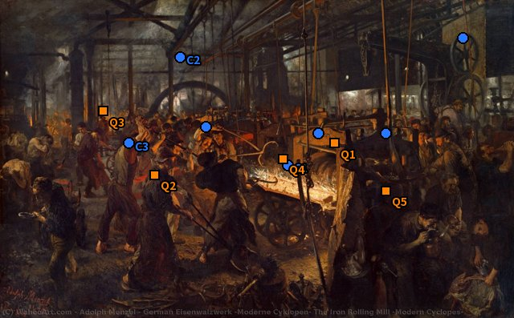
정답지 (초록 = 찾음, 빨강 = 놓침)
- C1 [필수/point] 달군 쇠를 끄는 금속 소리와 지글거림
- C2 [필수/clustered] 기계 바퀴와 압연기 굉음
- C3 [필수/clustered] 노동자들의 고함
모델 출력 (초록 = 짝 있음, 파랑 = 정답지에 없지만 들릴 만함, 빨강 = 지어냄)
- Q1 철제 롤링 밀 large rolling mill machinery with gears and rollers → C2
- Q2 노동자들의 외침 group of workers in the center and left foreground → C3
- Q3 불길과 열기 glowing furnace area in the background → 정답지에 없지만 들릴 만함
- Q4 압연되는 철봉 glowing metal bar being pushed through rollers → C1
- Q5 노동자들의 움직임 dense group of workers in the middle and right of the scene → 정답지에 없지만 들릴 만함
위치 오차
- 기계 바퀴와 압연기 굉음 ↔ 철제 롤링 밀: 대각선의 3.0%
- 노동자들의 고함 ↔ 노동자들의 외침: 대각선의 6.8%
- 달군 쇠를 끄는 금속 소리와 지글거림 ↔ 압연되는 철봉: 대각선의 1.4%
27_merryfamily — 즐거운 가족 40.8초
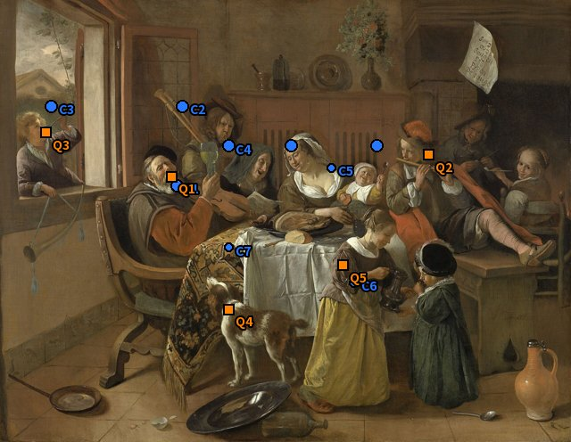
정답지 (초록 = 찾음, 빨강 = 놓침)
- C1 [필수/point] 바이올린 연주
- C2 [필수/point] 백파이프 소리
- C3 [필수/clustered] 피리 부는 아이들
- C4 [필수/clustered] 가족의 노래
- C5 [허용/point] 아기 소리
- C6 [허용/point] 술 따르는 소리
- C7 [허용/point] 개 소리
모델 출력 (초록 = 짝 있음, 파랑 = 정답지에 없지만 들릴 만함, 빨강 = 지어냄)
- Q1 루트 연주 man playing lute → 지어냄: 그림에 없음
- Q2 플루트 연주 boy playing transverse flute → C3
- Q3 호프 부는 소년 boy at window with horn → 정답지에 없지만 들릴 만함
- Q4 강아지 울음 dog standing near table → C7
- Q5 술 따기 woman pouring drink → C6
위치 오차
- 피리 부는 아이들 ↔ 플루트 연주: 대각선의 7.2%
- 개 소리 ↔ 강아지 울음: 대각선의 8.6%
- 술 따르는 소리 ↔ 술 따기: 대각선의 2.9%
28_railwaystation — 기차역 42.2초
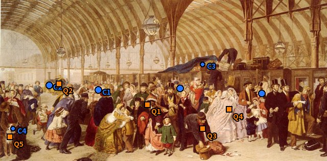
정답지 (초록 = 찾음, 빨강 = 놓침)
- C1 [필수/clustered] 역 군중의 웅성임
- C2 [필수/point] 증기기관차
- C3 [허용/point] 짐 싣는 소리
- C4 [허용/point] 개 짖는 소리
- C5 [허용/ambient] 역 지붕 아래 울림
모델 출력 (초록 = 짝 있음, 파랑 = 정답지에 없지만 들릴 만함, 빨강 = 지어냄)
- Q1 사람들의 소란 crowd of people talking and moving → C1
- Q2 기차 소리 steam train on the left → C2
- Q3 가방 떨어지는 소리 man dropping a suitcase → 정답지에 없지만 들릴 만함
- Q4 여자 울음소리 woman in white dress embracing another → 정답지에 없지만 들릴 만함
- Q5 개 짖는 소리 dog on the far left → C4
위치 오차
- 역 군중의 웅성임 ↔ 사람들의 소란: 대각선의 10.0%
- 증기기관차 ↔ 기차 소리: 대각선의 2.7%
- 개 짖는 소리 ↔ 개 짖는 소리: 대각선의 2.4%
29_ninthwave — 아홉 번째 파도 31.6초
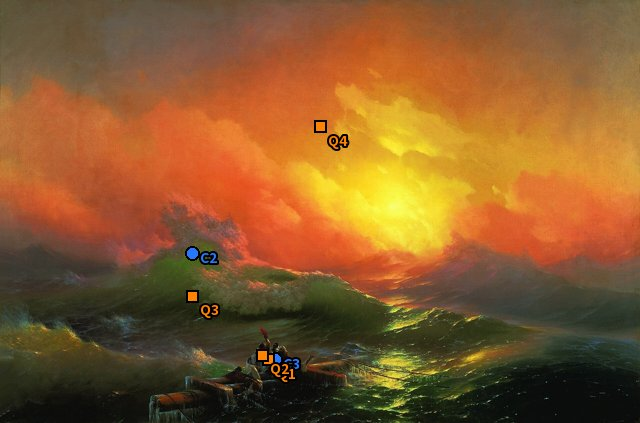
정답지 (초록 = 찾음, 빨강 = 놓침)
- C1 [필수/ambient] 폭풍 바다
- C2 [필수/point] 거대한 파도 부서짐
- C3 [필수/point] 난파된 사람들의 외침
- C4 [허용/ambient] 폭풍 바람
모델 출력 (초록 = 짝 있음, 파랑 = 정답지에 없지만 들릴 만함, 빨강 = 지어냄)
- Q1 배 소리 wooden raft → 정답지에 없지만 들릴 만함
- Q2 крик people on raft → C3
- Q3 파도 소리 ocean waves → C1
- Q4 바람 소리 stormy sky and sea surface → C4
위치 오차
- 난파된 사람들의 외침 ↔ крик: 대각선의 1.8%
30_stilllife — 금박 잔이 있는 정물 (함정: 정물) 3.8초
정답지 (초록 = 찾음, 빨강 = 놓침)
모델 출력 (초록 = 짝 있음, 파랑 = 정답지에 없지만 들릴 만함, 빨강 = 지어냄)
위치 오차